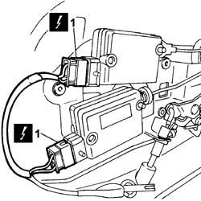
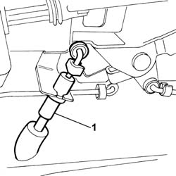
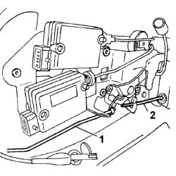
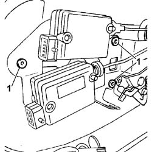
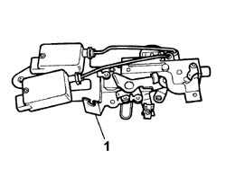

7020D58 SLIDING SIDE DOOR INTERIOR OPENING RELAY DEVICE (WITH HANDLE) (ONE) R.R. FOR REPAIR OR REPLACE
- Path
- Procedures > 70 FITTINGS > 7020 LOAD COMPARTMENT DOORS > 7020D SLIDING SIDE DOOR CLOSURE DEVICES > 7020D58 SLIDING SIDE DOOR INTERIOR OPENING RELAY DEVICE (WITH HANDLE) (ONE) R.R. FOR REPAIR OR REPLACE
- Kind
- repair procedure (removal / refitting; the operation number is the code)
- Applies to
- all engines; all production periods
- Interactive page
- https://sloeber94.github.io/elrnDB-fUlss/en/#/179007733
Applies to: all engines; all production periods
 Removing
Removing
 Refitting
Refitting- Carry out
Op. 5530B56 BATTERY DRIP TRAY COVER - R.R.
- Disconnect the negative battery terminal.
See A001 Battery
- Carry out
Op. 7050A02 SIDE REAR INDIVIDUAL SEAT (ONE), LEFT OR RIGHT - R.R.
- Carry out
Op. 7020D32 SLIDING SIDE DOOR INTERIOR OPENING HANDLE/ESCUTCHEON (INTERIOR) - R.R.
- Carry out
Op. 7020C30 SLIDING DOOR INTERIOR PANEL - R+R
- Carry out
Op. 7020D34 SLIDING DOOR INTERIOR HANDLE - R+R
- Carry out
Op. 7020D62 KNOB FOR SLIDING SIDE DOOR SAFETY DEVICE, LEFT OR RIGHT - R.R.
1. Disconnect the electrical connections for the sliding side door opening/closing motors.

Applies to: all engines; all production periods
1. Disconnect the link controlling release of the device for holding the sliding door open from the mechanism.

Applies to: all engines; all production periods
1. Disconnect the catch control link terminal from the return mechanism.
2. Disconnect the exterior handle control link.

Applies to: all engines; all production periods
1. Drill out the rivets fastening the sliding side door opening return device.

Applies to: all engines; all production periods
1. Remove the sliding side door opening return mechanism complete with door lock motors.

Applies to: all engines; all production periods
Refitting
Removing- Position the sliding side door opening return mechanism in its seat and rivet in place using new rivets.
- Connect the exterior handle link and the catch control link to the return mechanism.
- Connect the link controlling release of the device holding the sliding door open to the mechanism.
- Connect the electrical connections for the sliding side door opening/closing motors.
- Carry out
Op. 7020D62 KNOB FOR SLIDING SIDE DOOR SAFETY DEVICE, LEFT OR RIGHT - R.R.
- Carry out
Op. 7020D34 SLIDING DOOR INTERIOR HANDLE - R+R
- Carry out
Op. 7020C30 SLIDING DOOR INTERIOR PANEL - R+R
- Carry out
Op. 7020D32 SLIDING SIDE DOOR INTERIOR OPENING HANDLE/ESCUTCHEON (INTERIOR) - R.R.
- Carry out
Op. 7050A02 SIDE REAR INDIVIDUAL SEAT (ONE), LEFT OR RIGHT - R.R.
- Connect the negative battery terminal.
See A001 Battery
- Carry out
Topics linked from this page (6)
- 5530B56 BATTERY DRIP TRAY COVER - R.R.
- 7020D32 SLIDING SIDE DOOR INTERIOR OPENING HANDLE/ESCUTCHEON (INTERIOR) - R.R.
- 7020D34 SLIDING DOOR INTERIOR HANDLE - R+R
- 7020D62 KNOB FOR SLIDING SIDE DOOR SAFETY DEVICE, LEFT OR RIGHT - R.R.
- 7020C30 SLIDING DOOR INTERIOR PANEL - R+R
- 7050A02 SIDE REAR INDIVIDUAL SEAT (ONE), LEFT OR RIGHT - R.R.
Topics that link to this page (5)
- 5505B30 WIRING BUILT INTO SLIDING SIDE DOOR LEFT OR RIGHT R R
- 5505B31 SLIDING SIDE DOOR INCORPORATING WIRING WITH SLIDING SIDE DOOR PANEL REMOVED. S-R
- 7020D20 INTERIOR/EXTERIOR HANDLE PROTECTION FOR ONE SLIDING SIDE DOOR - R.R.
- 7020D28 SLIDING SIDE DOOR OUTER HANDLE SUPPORT (ONE) LEFT OR RIGHT - R. & R.
- 7020D34 SLIDING DOOR INTERIOR HANDLE - R+R